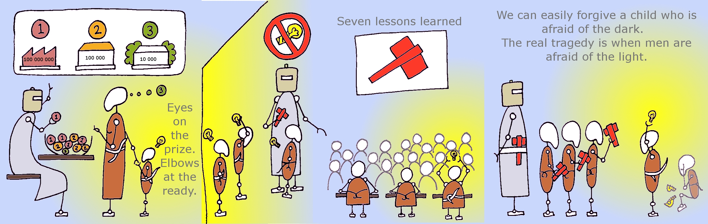

Schools are complex social systems that have a powerful effect on behaviour as well as learning. A great deal of research has been carried out on bullying, but it focuses largely on individual children's behaviour. Less research has looked at the ways in which schools themselves can cause behavioural problems between pupils through what they expect pupils to do, and how they go about rewarding and punishing the way pupils do it. This module takes a highly unusual approach to the problem of bullying, and develops students' political awareness through the use of images rather than words. To demonstrate your achievement in the learning outcomes you will produce a piece of artwork instead of the usual written assignment.
